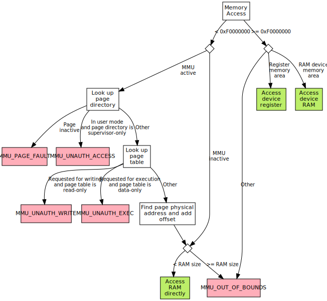
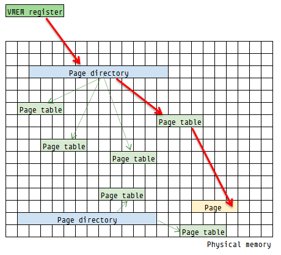
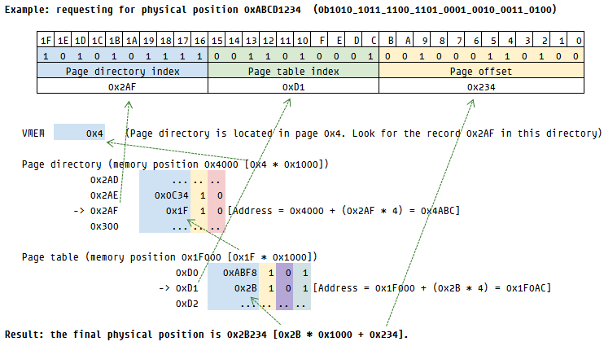
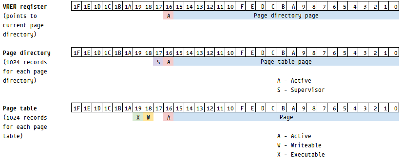

tinyvm is a emulator for a 32-bit computer that aims to be as powerful as a modern computer, but as simple as 8-bit computer from the 80s. This computer doesn't exist in a physical form (yet).
Features:
- 32-bit CPU
- up to 4 Gb of RAM
- virtual memory
- up to 4 hard disks of 256 Gb each
The tab "doc" contains the documentation for each one of the computer devices on the left. The tab "debug" allows the internals of each device to be inspected.
The code for this emulator is avaliable under the GPLv3 license.
Motherboard
The motherboard coordinates how the memory is accessed. Each device contains an addressing area, and the motherboard will relay the information to the device, according to the address.
The addressing areas are organized in a memory map.
The full physical memory of the computer (RAM) is also present in the motherboard. When a memory address is accessed, the motherboard will:
- look for a device in the memory map. If no device is mapped to this address, it will
- ask the MMU for a physical address. If the MMU is not active, it will
- access the physical address in RAM. If the address is out of bounds, it will
- set the OB (out of bounds) register. This register can be accessed at 0xFFFFFFFF.
This means that, without a MMU active, the memory map will something look like this:
| RAM (physical memory) | 0x00000000 | |
| Invalid access area | ?? (depending on memory size) | |
| Devices registers | 0xF0000000 | |
| Devices RAM | 0xF0010000 | |
| 0xFFFFFFFF |
(see the debug page for the current actual implementation)
Implementing new devices
New devices can be created in javascript and connected to the motherboard. For that, they need to respect the following interface:
class Device {
constructor(interrupts...)
name() : string
interruptCount() : int [optional]
get(addr) : uint8_t
set(addr, uint_8)
avaliable() : bool
doc() : html_string [optional]
debug() : html_string [optional]
}
Devices of this kind will receive 256 bytes of area to use as registers.
Devices can also request an extra, larger amount of memory to be used as a local RAM. These devices need to respect the following interface:
class RAMDevice extends Device {
areaRequested() : int
getRAM(addr) : uint8_t
setRAM(addr, uint8_t)
}
Memory map
This is the current memory map for the computer.
RAM
The RAM (random access memory) store the information used by the programs running in the computer.
It is important to notice that the RAM is never accessed directly. The motherboard will determine the address, usually following these rules:
- If the address is ≥ 0xF0000000, the access is redirected to the devices;
- If the address is < 0xF0000000 and virtual memory is active, the address is rerouted via the MMU;
- If the address is < 0xF0000000 and virtual memory is not active, then the address is accessed directly in the RAM.
When the memory is being accessed directly (option 3), the RAM is also called physical memory.
BIOS
The BIOS is a read-only block of memory that is the first code executed when the computer is turned on.
It contains code that will check errors and look for disks present, loading the booting code and excuting it.
When the CPU is turned on, it will point to 0xF0000100, (in the BIOS area), that will contain simply a jump to a larger code area starting in 0xF0010000.
Registers
| Register | Description | Address | Access | Current value |
|---|---|---|---|---|
| BJMP | Jumps to beginning of BIOS code. (jmp 0xF0010000) | 0xF0000000 | R | addr=0xF0000100 addr=0xF0000101 addr=0xF0000102 addr=0xF0000103 addr=0xF0000104 |
| BMIN | BIOS version (minor) | 0xF0000010 | R | addr=0xF0000110,prefix |
| BMAJ | BIOS version (major) | 0xF0000011 | R | addr=0xF0000111,prefix |
Source code
Binary data
MMU
The MMU (memory management unit) controls the access to the RAM. If the MMU is disabled, any memory address is mapped directly to the same adress in RAM (this is called physical memory). If the MMU is enabled, however, a memory access to any address is translated by the MMU. This allows for more sophisticated memory management technique called virtual memory.
The virtual memory can be activated by setting the bit 16 of the VMEM register, like this:
movd [MMU_VMEM], (1 << 16) | 0xFAB
This will activate the virtual memory and set the memory page to 0xFAB.
Algorithm for memory addressing
When a memory address is selected, the motherboard and MMU will use the following algorithm to determine the final memory location:
Virtual Memory
The virtual memory makes possible to access the memory indirectly. If active, when the CPU requests a memory byte from the MMU, the MMU lookups the position in a page table to search for the physical position. This has the following advantages:
- By creating several page tables, it is possible to make that several processes see the full memory as if were their own, easing the development and avoiding that processes access memory from other processes;
- It is possible to establish different permissions for different memory pages. A page, for example, might be only accessible by the kernel;
- It is possible to create pages outside of the memory (in a swap file, for example), thus allowing more memory to be addressable than what is available in the device.
Memory address translation
The image below illustrates how the logical access works. The VMEM register contains the Page directory address. The page directory points to multiple page tables, and the page table points to a page in memory.
The way the access works is exemplified below.
The VMEM register can be changed every time the OS changes the active process. This way, each process can have its own memory.
Page details
Each page contains 0x1000 bytes (4 kB, or 4096 bytes). Since each index is 4 bytes long, there are 1024 indexes in each page.
Addresses above 0xF0000000
Memory positions above 0xF0000000 will access the devices' memories. This means that the maximum addressable space for RAM is 3GB. See Motherboard/Debug for the details on which device will use each block of memory.
Registers and special commands
The MMU contains a set of registers that help managing memory. A list of these registers along with their description and current values can be seen in the debug page.
Of particlar interest, is the fast memory copy. Using it, the MMU can fast copy a block of memory (memcpy). It is called by filling the parameters MMU_MCPY_ORIG, MMU_MCPY_DEST and MMU_MCPY_SZ, and setting MMU_MCPY to 0x1. Example: copy 256 bytes from 0x1234 to 0xABCD:
movd [MMU_MCPY_ORIG], 0x1234
movd [MMU_MCPY_DEST], 0xABCD
movd [MMU_MCPY_SZ], 256
movb [MMU_CPY], 1
This command can be used even if the virtual memory is disabled.
Errors
If an error happens during a MMU operation, the interrupt defined in MMU_INTERRUPT will be called, and MMU_ERROR will contain one of the following:
| Value | Constant | Description |
|---|---|---|
| 0x00 | MMU_NO_ERRORS | No errors happened |
| 0x01 | MMU_OUT_OF_BOUNDS | Memory addressed above the memory size |
| 0x02 | MMU_PAGE_FAULT | Memory position is not paged |
| 0x04 | MMU_UNAUTH_WRITE | Tried to write read-only memory address |
| 0x08 | MMU_UNAUTH_EXEC | Tried to load non-executable memory address for execution |
| 0x10 | MMU_UNAUTH_ACCESS | Tried to access supervisor-only memory address in user mode |